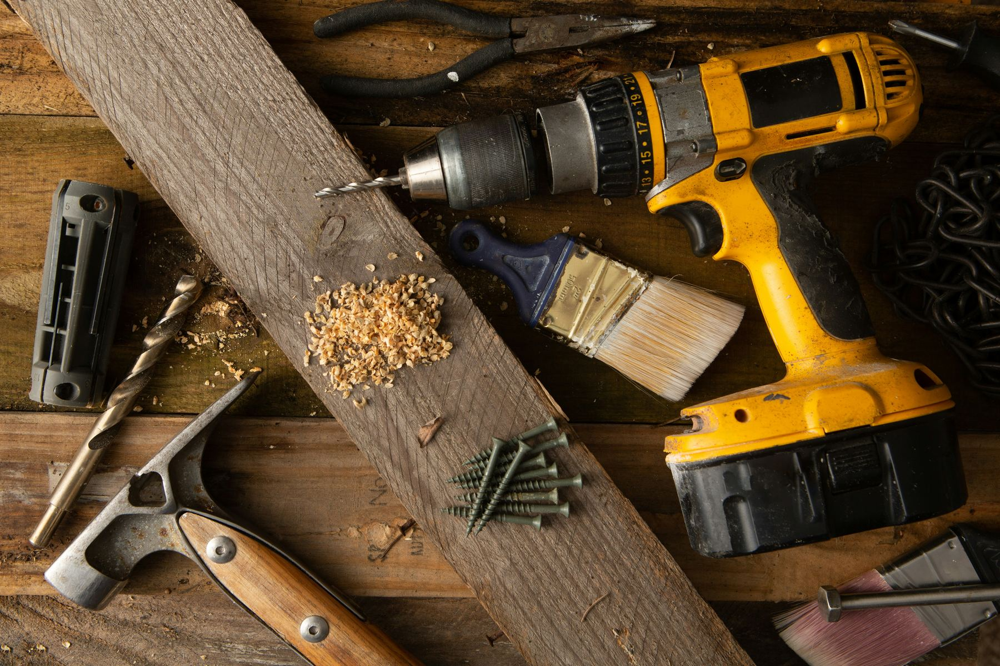
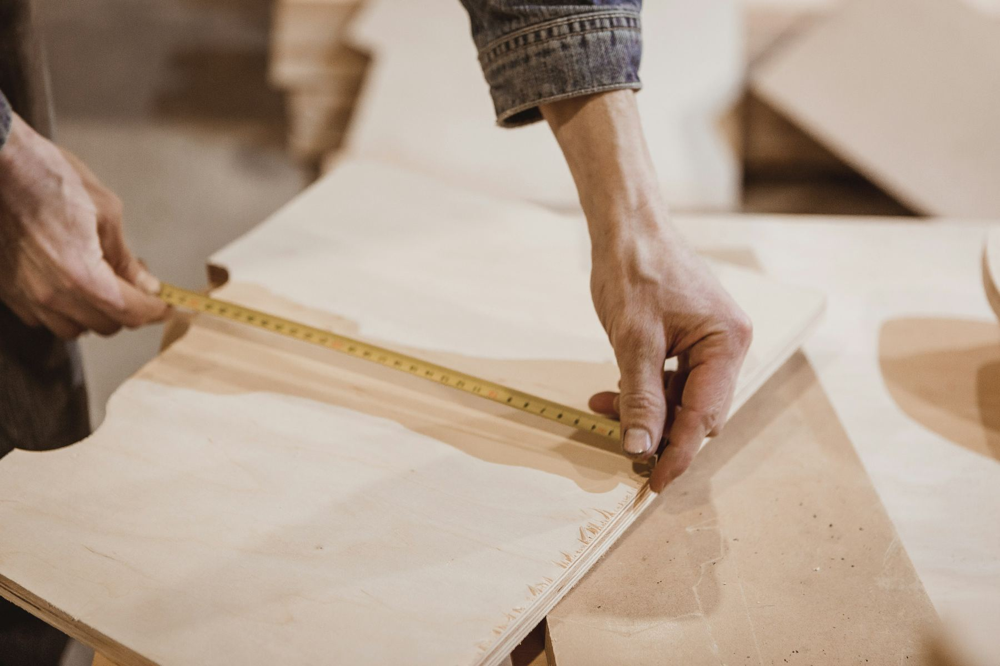

Foto de referencia · no es obra de Jotax
Muebles a medida que se vuelven parte de tu casa.
Diseñamos, fabricamos e instalamos muebles a medida, pensados para el espacio exacto donde van.

Quiénes somos
Jotax Team nació de la amistad de Joel y Axel, dos amigos apasionados por la carpintería que no le tienen miedo a mezclar lo artesanal con la tecnología más nueva. Cada mueble empieza escuchando tu idea y conociendo el espacio en persona, para diseñarlo pensando en cómo realmente lo vas a usar. Desde La Plata, trabajamos codo a codo con cada cliente de principio a fin, cuidando cada detalle como si el mueble fuera para nuestra propia casa.
Trabajos
Ambientes resueltos de pared a pared.


¿Por qué elegir Jotax Team?


Contacto
¿Tenés un proyecto en mente? Contáctanos para recibir un presupuesto personalizado.
Contáctanos